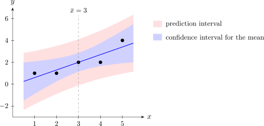

2.11 Interval estimation
Confidence intervals for \(\beta _0\), \(\beta _1\) and \(\sigma ^2\)
Theorem 2.11.1. \(100(1-\alpha )\%\) confidence intervals are \begin {align*} \beta _1&\colon \quad \hat \beta _1 \pm t_{\alpha /2, n-2}\, \operatorname {se}(\hat \beta _1), \\ \beta _0&\colon \quad \hat \beta _0 \pm t_{\alpha /2, n-2}\, \operatorname {se}(\hat \beta _0), \\ \sigma ^2&\colon \quad \left ( \frac {SS_{\mathrm {Res}}}{\chi ^2_{\alpha /2, n-2}},\ \frac {SS_{\mathrm {Res}}}{\chi ^2_{1-\alpha /2, n-2}} \right ), \end {align*}
where \(\chi ^2_{\alpha , \nu }\) is the point with probability \(\alpha \) above it in the \(\chi ^2_\nu \) distribution.
Proof. By Theorem 2.8.1, \[ P\left ( -t_{\alpha /2,n-2} \le \frac {\hat \beta _1 - \beta _1}{\operatorname {se}(\hat \beta _1)} \le t_{\alpha /2,n-2} \right ) = 1 - \alpha . \] Multiplying through by \(\operatorname {se}(\hat \beta _1)\) and rearranging the inequalities to isolate \(\beta _1\) gives \[ P\left ( \hat \beta _1 - t_{\alpha /2,n-2}\operatorname {se}(\hat \beta _1) \le \beta _1 \le \hat \beta _1 + t_{\alpha /2,n-2}\operatorname {se}(\hat \beta _1) \right ) = 1 - \alpha . \] The same argument works for \(\beta _0\). For \(\sigma ^2\), Theorem 2.7.3 gives \[ P\left ( \chi ^2_{1-\alpha /2,n-2} \le \frac {SS_{\mathrm {Res}}}{\sigma ^2} \le \chi ^2_{\alpha /2,n-2} \right ) = 1 - \alpha ; \] taking reciprocals reverses the inequalities, and multiplying by \(SS_{\mathrm {Res}}\) isolates \(\sigma ^2\). □
Example 2.11.2. Find 95% confidence intervals for \(\beta _1\), \(\beta _0\) and \(\sigma ^2\) for the advertising data.
Solution. With \(t_{0.025,3} = 3.182\): \begin {align*} \beta _1&\colon \ 0.7 \pm 3.182 \times 0.1915 = 0.7 \pm 0.609, \quad \text {that is, } (0.091,\ 1.309); \\ \beta _0&\colon \ -0.1 \pm 3.182 \times 0.6351 = -0.1 \pm 2.021, \quad \text {that is, } (-2.121,\ 1.921). \end {align*}
The interval for \(\beta _1\) excludes \(0\) and the interval for \(\beta _0\) includes it, matching the two tests of Example 2.8.2. For \(\sigma ^2\), \(\chi ^2_{0.025,3} = 9.348\) and \(\chi ^2_{0.975,3} = 0.216\), so the interval is \[ \left ( \frac {1.1}{9.348},\ \frac {1.1}{0.216} \right ) = (0.118,\ 5.10) . \]
The mean response at a given \(x_0\)
Often the quantity of interest is the mean response \(E(y \mid x_0) = \beta _0 + \beta _1 x_0\) at a particular \(x_0\), for example the mean sales when \(\$4\) is spent. Its natural estimator is the point on the fitted line, \(\hat y_0 = \hat \beta _0 + \hat \beta _1 x_0\).
Theorem 2.11.3. \(\hat y_0\) is unbiased for \(E(y \mid x_0)\), with \[ \operatorname {Var}(\hat y_0) = \sigma ^2 \left ( \frac 1n + \frac {(x_0 - \bar x)^2}{S_{xx}} \right ), \] and a \(100(1-\alpha )\%\) confidence interval for \(E(y \mid x_0)\) is \[ \hat y_0 \pm t_{\alpha /2, n-2} \sqrt {\hat \sigma ^2 \left ( \frac 1n + \frac {(x_0 - \bar x)^2}{S_{xx}} \right )} . \]
Proof. Write \(\hat y_0 = \bar y - \hat \beta _1 \bar x + \hat \beta _1 x_0 = \bar y + \hat \beta _1 (x_0 - \bar x)\). Then \(E(\hat y_0) = \beta _0 + \beta _1 \bar x + \beta _1 (x_0 - \bar x) = \beta _0 + \beta _1 x_0\). Since \(\operatorname {Cov}(\bar y, \hat \beta _1) = 0\) (Lemma 2.4.3), \[ \operatorname {Var}(\hat y_0) = \operatorname {Var}(\bar y) + (x_0 - \bar x)^2 \operatorname {Var}(\hat \beta _1) = \frac {\sigma ^2}{n} + \frac {(x_0 - \bar x)^2 \sigma ^2}{S_{xx}} . \] \(\hat y_0\) is normal, being linear in the \(y_i\), and is a function of \((\bar y, \hat \beta _1)\), so it is independent of \(SS_{\mathrm {Res}}\). The argument of Theorem 2.8.1 then shows that \((\hat y_0 - E(y \mid x_0))\) divided by its standard error has the \(t_{n-2}\) distribution, and the interval follows as before. □
Prediction of a new observation
A different question is where a single new observation \(y_0\), taken at \(x_0\), is likely to fall. Now there are two sources of uncertainty: the line is estimated, and the new observation has its own error, \(y_0 = \beta _0 + \beta _1 x_0 + \varepsilon _0\).
Theorem 2.11.4. A \(100(1-\alpha )\%\) prediction interval for a new observation \(y_0\) at \(x_0\) is \[ \hat y_0 \pm t_{\alpha /2, n-2} \sqrt {\hat \sigma ^2 \left ( 1 + \frac 1n + \frac {(x_0 - \bar x)^2}{S_{xx}} \right )} . \]
Proof. The new observation is independent of the sample, so \(y_0\) is independent of \(\hat y_0\) and of \(SS_{\mathrm {Res}}\). The prediction error \(y_0 - \hat y_0\) is normal with mean \((\beta _0 + \beta _1 x_0) - (\beta _0 + \beta _1 x_0) = 0\) and variance \[ \operatorname {Var}(y_0) + \operatorname {Var}(\hat y_0) = \sigma ^2 + \sigma ^2 \left ( \frac 1n + \frac {(x_0 - \bar x)^2}{S_{xx}} \right ) . \] Dividing by the estimated standard deviation gives a \(t_{n-2}\) variable, as in Theorem 2.8.1, and \[ P\left (-t_{\alpha /2,n-2} \le \frac {y_0 - \hat y_0}{\operatorname {se}(y_0 - \hat y_0)} \le t_{\alpha /2,n-2}\right ) = 1 - \alpha \] rearranges to the interval. □
Example 2.11.5. For the advertising data at \(x_0 = 4\), find a 95% confidence interval for the mean sales and a 95% prediction interval for the sales in a new week.
Solution. \(\hat y_0 = -0.1 + 0.7 \times 4 = 2.7\), and \(\frac 1n + \frac {(x_0 - \bar x)^2}{S_{xx}} = \frac 15 + \frac {(4-3)^2}{10} = 0.3\).
Mean response. Standard error \(\sqrt {0.3667 \times 0.3} = 0.3317\), so the interval is \[ 2.7 \pm 3.182 \times 0.3317 = 2.7 \pm 1.055, \quad \text {that is, } (1.645,\ 3.755) . \] New observation. Standard error \(\sqrt {0.3667 \times 1.3} = 0.6904\), so the interval is \[ 2.7 \pm 3.182 \times 0.6904 = 2.7 \pm 2.197, \quad \text {that is, } (0.503,\ 4.897) . \] The prediction interval is about twice as wide: most of the uncertainty about a single week’s sales comes from \(\varepsilon _0\), not from the estimated line.
Repeating the calculation over a range of \(x_0\) traces out the two bands in Figure 4. Both are narrowest at \(x_0 = \bar x\) and widen as \(x_0\) moves away from it, which is another reason extrapolation is risky.

Example 2.11.6. For the yield data of Example 2.2.7, test significance of regression at the 5% level and give a 95% prediction interval for the yield of a new batch at \(45^\circ \)C.
Solution. Here \(\hat \sigma ^2 = 0.4762\) with \(4\) degrees of freedom, and \(t_{0.025,4} = 2.776\). The standard error of the slope is \(\operatorname {se}(\hat \beta _1) = \sqrt {0.4762/1750} = 0.01650\), so \(t_0 = 0.5714/0.01650 = 34.64\), far beyond \(2.776\): the regression is highly significant.
At \(x_0 = 45\), \(\hat y_0 = 72.048\) and \(1 + \frac 16 + \frac {(45 - 35)^2}{1750} = 1.2238\), so \begin {align*} 72.048 \pm 2.776 \sqrt {0.4762 \times 1.2238} &= 72.048 \pm 2.776 \times 0.7634 \\ &= 72.048 \pm 2.119 , \end {align*}
that is, \((69.93,\ 74.17)\%\).
Questions on this section
Stuck on something here? Ask below and it stays attached to this topic.